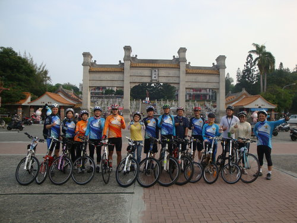
清晨它輕踏著夜的腳步，在這秋末的時刻，河東獅車友聚集在高雄市有名的地標「澄清湖」，秋老虎彷彿還未甦醒，氣溫宜人陽光溫暖，在領隊小獅（Tony Lion）作勢鳴槍起跑，活動正式開始。喔，等等，忘了介紹站在中間偏左著橘色車衣、酷炫的公路車，以及性格的外型就是我們的河東獅自行車社長。
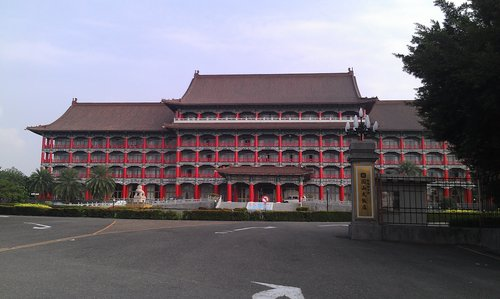
從澄清湖門口出發，不多久就右轉接著一段上坡路面，制高點就是保有中國傳統建築、年代悠久的高雄圓山大飯店，曾經名聞一時爭相喜慶宴客的地點。
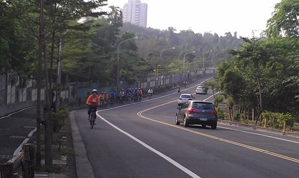
過了圓山飯店下坡後，再右轉就到了環澄清湖的經典路段中興塔好漢坡，有三段連續上坡，難度逐漸增加，是公路車練習騎乘的好地段，看看大家一字排開，兄弟上山各憑本事，不管是父子檔、母子檔、夫妻檔，到這裡都要變速成最低檔。
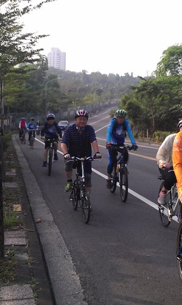
瘦哥：大家好，我叫「林柏瘦」，很高興跟大家一起親近大自然，騎乘腳踏車！希望大家多多照顧。
嘉億：所以我都騎在你的左後方亦步亦趨啊。
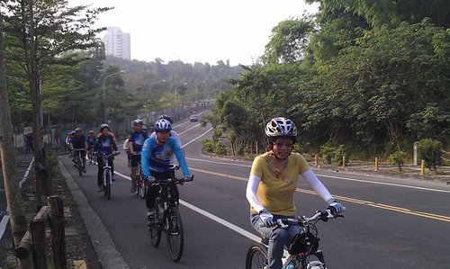
大會報告，大會報告。目前環法公路賽澄清湖站賽程，由我們警察廣播電台名主持人劉姐暫時領先
熱心聽眾都紛紛call in進來加油，...............可惜比賽最後結果，劉姐以些微秒數與冠軍擦身而過。
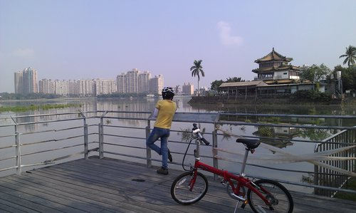
劉姐：
勝敗乃兵家常事，結果雖不如人意，但重要的是過程，不要鬱卒。看看這湖邊山水，暫時遠離工作塵囂，偷得浮生半日閒不也快哉！
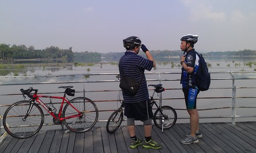
瘦哥：我說小蔣ㄚ，我發現事情不是像我這樣聰明的人想得那麼簡單，現在腰酸背痛，腳酸腿軟，我想我先 閃人！
小蔣：瘦哥學長，好的開始是成功的一半，勝利都是屬於堅持到最後一刻的人，何況騎了三圈已慢慢看出成果了，請慎思。
瘦哥：你說得也有道理，好吧，再給它撐一下。
小蔣：學長，昨夜我太太輪大夜班餵小孩母奶，換尿布，今天早上換我輪值白天班餵母奶，我先開溜，你掩護我一下。
壽哥：#%$@&*.....
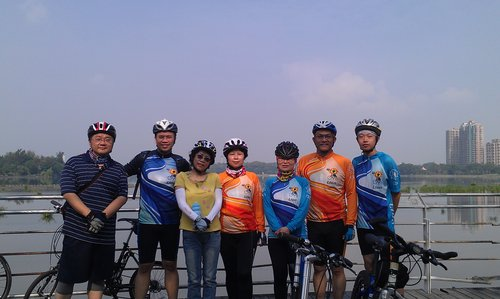
這是本次澄清湖騎乘的第二集團車隊在得月樓旁留影，相片中右邊那個孩子已經從河東獅幼獅變成了小獅！我在想像十年河東，河東獅十週年慶時，這些小獅會是各自變成怎樣？！
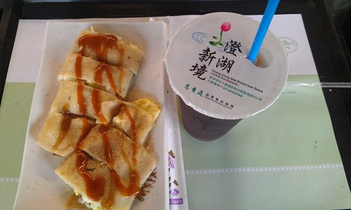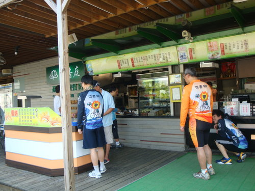
輕鬆的騎乘完畢，就在澄清湖大門口的慈香庭吃早餐。壹份蛋餅、一杯飲料，大夥在露天咖啡雅座悠閒聊天談笑。
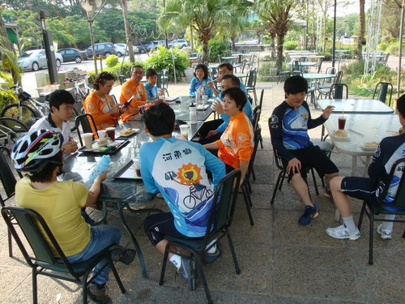
就在大家聊得正起勁的時候，忽然聽到鍾二哥後面桌子那對父子的對話：
俊哥：你&#....，我最早點餐最後拿到就算了，連飲料都把我送錯！
兒子：爸，他不是送來你點的南南瓜熱豆漿嗎？
俊哥：冰的啦！
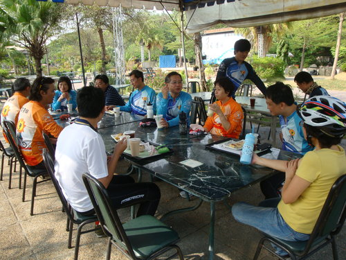
兒子這時候猶豫的站起來說：爸仔...，真的要翻桌（台語）嗎？
俊哥：不是啦，我是說我點的飲料是冰的。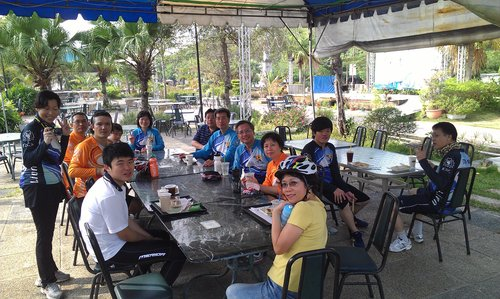
俊哥：淡定；淡定。沒事，我會好好處理。攝相機不用對我特寫。
河東獅的2011年到2012年上半年騎乘計畫第一炮，算是本社社團活動的暖身，雖然中途有些不順遂，但是怎麼樣的心情決定你騎乘的快樂，活動日期雖然表面上已結束，但正式的行程也如火如荼規劃中，隨興揪團騎乘去，青春結伴不留白，路有多長，心就有多寬，歡迎再相會。最後，僅以下面這幅書法意境與各位分享，這是我偶然在台北市立美術館所欣賞到的藝術家作品，起初是被它的書法字體所吸引，再窺究其內容，彷彿有感動卻又蘊涵似懂非懂的哲理，願讀者有特別的心領神會。
阿祥筆 2012,10,31
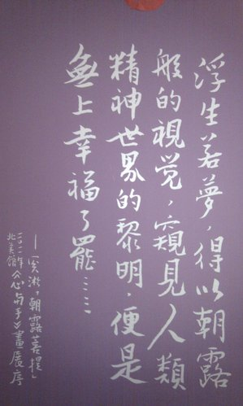